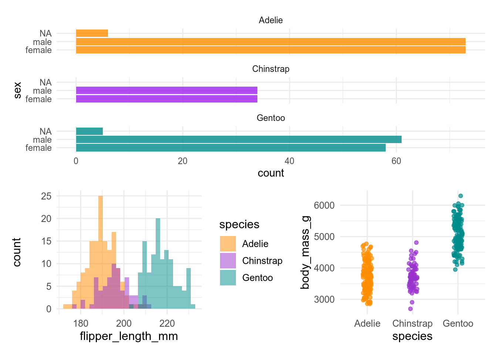
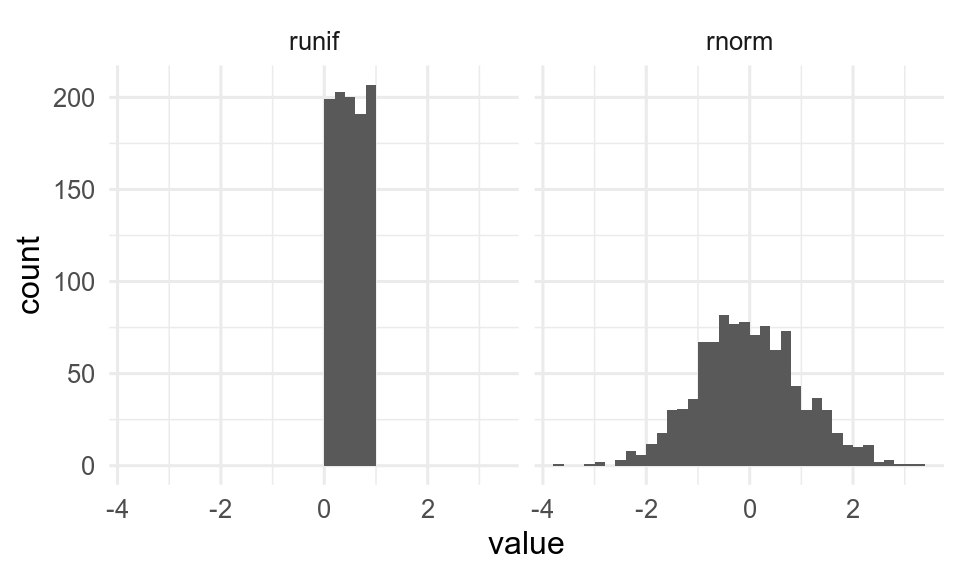

9^2 != 9 * (3 + 6)[1] FALSE

You must - have installed both R and RStudio on your computer (Section 2.2). - configured RStudio (Section 2.4) - know how to install and activate a package (Chapter 5)
Performing arithmetic operations is no big deal in R. Simply write any operation using the usual arithmetic operators +, -, * and / and run your code. No need to type =.
R allows you to add parentheses ( ) when you need to impose the order of operations. When it comes to raising a number to the power of another one, use the symbol ^ or **.
In R, calculate:
You can compare 2 elements using the following operators:
> greater than,>= greater than or equal to,< less than,<= less than or equal to,== equal to,!= not equal to.When comparing two elements, R returns either TRUE or FALSE.
9^2 != 9 * (3 + 6)[1] FALSEIn R,
pi
More complex operations such as square root, logarithms and exponentiation shall be run using specific functions. These functions are sqrt(), log(), exp(), etc.
In R, calculate
You may need to look at the built in help for some of these.
You can get help for any function by putting a ? before the name of the function.
So to get help for the function log(), run
?logThis will open the help file in the Help tab of RStudio (by default in the lower left quadrant.
Most help files have a similar structure (although some sections are optional).
example.example(log)The help files are sometimes not the most user friendly. The introverse package has simplified help pages for many common base R and tidyverse functions.
# install from github
remotes::install_github("spielmanlab/introverse")
library(introverse)
get_help("length")One of the great things about R is how many sources of help there are.
There are hundreds of thousands of answers between these sites, so it is likely that other people have had the same problem and asked the same question. Always search to see if find an answer before asking a question. For both these site, it is very important to provide a minimal reproducible example. That is example data (perhaps a built-in dataset) and code that can be run to show the problem. Code not relevant to the problem should be removed. The package reprex is useful for making reproducible example. Very often, making the reproducible example is enough to identify and fix the problem.
Look at the help file for length() and run the examples.
There are many datasets and other objects built into R or R packages. If the package is loaded, they can be used by typing their name.
pi[1] 3.141593month.abb# abbreviated month names [1] "Jan" "Feb" "Mar" "Apr" "May" "Jun" "Jul" "Aug" "Sep" "Oct" "Nov" "Dec"To make objects in packages available you can either load the package with library() first, or use data().
penguins # not available# A tibble: 344 × 8
species island bill_length_mm bill_depth_mm flipper_length_… body_mass_g sex
<fct> <fct> <dbl> <dbl> <int> <int> <fct>
1 Adelie Torge… 39.1 18.7 181 3750 male
2 Adelie Torge… 39.5 17.4 186 3800 fema…
3 Adelie Torge… 40.3 18 195 3250 fema…
# … with 341 more rows, and 1 more variable: year <int>data(penguins, package = "palmerpenguins")
penguins# A tibble: 344 × 8
species island bill_length_mm bill_depth_mm flipper_length_… body_mass_g sex
<fct> <fct> <dbl> <dbl> <int> <int> <fct>
1 Adelie Torge… 39.1 18.7 181 3750 male
2 Adelie Torge… 39.5 17.4 186 3800 fema…
3 Adelie Torge… 40.3 18 195 3250 fema…
# … with 341 more rows, and 1 more variable: year <int>The penguins dataset contains morphological data on three species of penguin. You will meet this dataset repeatedly as it provides a convenient set of variables and observations well-suited for illustrating many purposes.
R uses objects to store data in memory. Storing data in an object is referred to as “assigning data”. There are different types of data and objects; we will talk much more about them further below. For now, let’s see why one should assign data to objects, and how to do it.
Putting data into named objects allows you to:
Let’s take a look at the following figure. It is made of 3 plots, each of them based on different variables taken from a single data set:
Warning: Removed 2 rows containing non-finite values (stat_bin).Warning: Removed 2 rows containing missing values (geom_point).
Believe it or not, but the code that builds this figure is as simple as this:
plot1 / (plot2 + plot3)In fact, everything that R needed in order to make the figure had been previously stored in the objects plot1, plot2 and plot3.
The clear benefit of assigning data into the above-mentioned objects is that it simplified a lot the code for the figure.
To assign data to an object, type first the name you want to give it followed by the operator <- and the data to store. In the following example, we will assign the result of the operation sqrt(42) in memory to the object named result:
result <- sqrt(42)At once, the object result and its associated value show up in the Environment tab of RStudio.

From now on, you can display the content of result simply by typing its name:
result[1] 6.480741You can also reuse the object for other operations:
result * 3[1] 19.44222result * result[1] 42To modify the content of an object, you simply have to assign new data to it. Here we modify the object result:
result <- exp(42)The content of result is automatically modify, as shown in the Environment tab.

Note that the previous content of result is lost as soon as the new data is assigned. To restore the original value, you will have to go back to your script and rerun the original command that assigned the square root of 42 to result. This is one of the many reasons why you should always work with a script and annotate it: it is your life line in case you make a mistake, lose objects, modify data elements, etc.
If you want to assign more than one data element to an object, use the function c() which concatenates the elements given between parentheses. By concatenating data elements and assigning them to an object, you create a vector, one of the simplest objects in R. We will look further at vectors in Section 6.5.3.1.
The data elements to concatenate must be separated with a comma ,.
This may be applied not only to numerical values, but also to characters and strings. When storing characters, you must use quotation marks " " around the elements.
one_two_three <- c("one", "two", "three")
one_two_three[1] "one" "two" "three"Note that you may concatenate data elements of various natures. Here we concatenate and store both numbers and strings, but everything becomes a string:
one_2_three_4 <- c("one", 2, "three", 4)
one_2_three_4[1] "one" "2" "three" "4" Naming an object sounds quite easy if you are creative, but there is a set of rules to respect:
., nothing else!_ and dots .
TRUE, FALSE, break, function, if, for, NA, function, see the complete list by running ?Reserved in the console)Beside these rules, you may find the following recommendations useful:
snake_case where words are written in lowercase and separated using an underscore symbol _
norwegian_seabirds, alpine_species_vestland, etcnew_dataset, modified_dataset, last_year_data, etcWe have prepared a learnr-tutorial that further describes the rules for naming objects, and gives you a chance to test how well you have understood. This tutorial is in the biostats.tutorials package.
The tutorial is called Naming objects. Simply click on the button Start Tutorial > to the right to start it.
See Section 5.6.3 for how to install biostats.tutorials and run the tutorials.
As introduced in Section 2.3.5.1, the Environment tab of RStudio lists all the objects stored in memory in a given project. This list comes with a quick summary of both the structure and the content of the objects.
The function View() applied to any object opens a new tab which displays the whole object in the form of a table. Figure 6.1 shows a screenshot of the tab that appears after running View() on a large object called tb.
View(tb)
View() opens a tab with the content of the object.View() is particularly useful when you want to quickly check entries directly in the data set as it spares you from finding and opening the original data file on your disk via the explorer.
View() the penguins dataset from palmerpenguins. Compare with what you get by printing the penguins dataset. Which do you find most useful?
When you are done with a particularly large object that takes a lot of memory and you do not have a use for it any longer, it may be useful to get rid of it. This is done by using the function rm(). Here we will delete result from the current environment.
rm(result)To delete several objects at the same time, use rm() and type their name separated with commas ,.
result <- exp(42)rm(result, results)Again, once it is done, there is only one way back: go to your script and rerun the commands that originally created result and results.
Throughout this website, we will use examples that include random series of numbers, sequences of characters or numbers, etc. These sequences and series are often created by a bunch of functions or expressions, some of which are described below.
The function rep() comes handy when you wish to repeat data elements n times in a row, or to repeat a sequence of elements n times. Using various arguments, you can decide how many times and/or in which manner the elements or sequences have to be repeated.
The simplest form of usage of rep() is rep(x, times= n) where x is what you want to repeat (string, number(s), etc) and n the number of iterations.
[1] 1 2 3 1 2 3 1 2 3[1] "One" "Two" "Three" "One" "Two" "Three" "One" "Two" "Three"The argument each= n allows for repeating n times each element at a time.
[1] 1 1 1 2 2 2 3 3 3[1] "One" "One" "One" "Two" "Two" "Two" "Three" "Three" "Three"Write code that will
The following section provides you with expressions or functions that build sequences of numerical or text values.
The colon separator : used in the expression a:b creates a series of consecutive numbers ranging from a to b with an increment of 1.
14:24 [1] 14 15 16 17 18 19 20 21 22 23 24Note that b is not necessarily the last element of the series.
14:24.5 [1] 14 15 16 17 18 19 20 21 22 23 2414.5:24 [1] 14.5 15.5 16.5 17.5 18.5 19.5 20.5 21.5 22.5 23.5Similar to a:b, seq(a, b) creates a series of consecutive numbers ranging from a to b with an increment of 1.
seq(14, 24) [1] 14 15 16 17 18 19 20 21 22 23 24Again, b is not necessarily the last element of the series.
seq(14, 24.5) [1] 14 15 16 17 18 19 20 21 22 23 24seq(14.5, 24) [1] 14.5 15.5 16.5 17.5 18.5 19.5 20.5 21.5 22.5 23.5You can use a set of additional arguments in seq() to adjust the output. Adding by= allows to tune the incrementation to any value you want (including decimal values). length.out= adjusts the incrementation to provide the desired number of elements ranging precisely from a to b.
seq(14, 24, by=2.5)[1] 14.0 16.5 19.0 21.5 24.0seq(14, 24, length.out=7)[1] 14.00000 15.66667 17.33333 19.00000 20.66667 22.33333 24.00000The following section provides you with functions that build series of random, numerical values. It demonstrates functions to make sequences from uniform and normal distributions, but there are many more distributions available in R.

runif(n) returns a series of n random numbers from a uniform distribution between 0 and 1.
runif(7)[1] 0.91849089 0.73703818 0.51124368 0.09852394 0.39847552 0.15087205 0.59684023runif(n, min=a, max=b) returns a series of n random numbers in the range from a to b:
runif(7, min=10, max=100)[1] 30.30941 31.81064 67.89341 73.00052 77.42482 53.54733 57.88937rnorm(n) creates a series of n numbers taken from a normal distribution.
rnorm(10) [1] 0.90276094 0.96959261 -0.08708719 0.85968817 -1.58501234 1.65775096
[7] -1.71862501 -1.01445408 1.68059975 1.27218867By default, the normally distributed population is set up with a mean of 0 and a standard deviation of 1, but this may be adjusted with mean= and sd=.
rnorm(10, mean=50, sd=3) [1] 49.95197 48.44924 49.10022 50.11712 52.58579 48.90891 55.59019 44.61133
[9] 46.85443 52.00853sample(x, n, replace = TRUE/FALSE) returns a sample of n integers randomly taken in the object x (which may be a vector, a series such as 1:100, etc). replace= followed by either TRUE or FALSE defines whether or not a data element can appear repeatedly in the sample.
sample(1:100, 10, replace = FALSE) [1] 12 82 72 95 63 93 24 15 70 90sample(20:30, 7, replace = TRUE)[1] 22 20 26 26 29 30 23An interesting property of the function sample() is that it can be used to shuffle the result of an expression or the content of a vector, something which is useful for randomization of data elements. In the following example, sample() shuffles and returns all the values in 1:10:
sample(1:10) [1] 2 10 6 4 3 8 5 7 9 1set.seed()
The sequences are not strictly random but pseudo random. The sequences repeat with a very long period (219937 - 1 for the default Mersenne-Twister algorithm). If you want to get exactly the same sequence again (for reproducibility), you can set the seed for the random numbers with set.seed().
[1] 1.37379088 0.86210687 0.47348910 0.70126281 -0.08505527[1] 1.37379088 0.86210687 0.47348910 0.70126281 -0.08505527Objects may contain anything from a single numerical value to a fully developed data set with dozens of variables and thousands of observations. When working in R, it is important to understand what kind of data you manipulate and what kind of object you build from it.
Here we will first review the primitive data types, then see a few useful data classes, and finally the object types that will be important in your studies.
R lets you manipulate 6 primitive data types: numeric, integer, character, logical (also called boolean), complex and raw. Only the first four types are relevant in the scope of this website.
NB: in the following sections, we will use the function class() to identify the nature of the data stored in objects.
Any number with a decimal value, whether positive or negative, is of type numeric. The object num created below contains a single decimal value and is thus also numeric.
num <- -35.2
class(num)[1] "numeric"Integers are positive or negative numbers that do not contain a decimal value. The object int below contains a single integer and is thus of type integer.
int <- 35L
class(int)[1] "integer"Note that int was assigned the number 35L. The “L” that follows the number forces the object to store it as an integer. If we write 35 instead of 35L, the object is just numeric as shown below.
int <- 35
class(int)[1] "numeric"An object containing a string of letters combined (or not) with numbers, or even a single letter, is of type character. The letters may be upper and/or lower case. The object char below contains a single word and is thus defined as character.
char <- "Letters"
class(char)[1] "character"Note that the strings of characters must be stored in objects using " ".
Logical (or boolean) defines binary objects which contain TRUE or FALSE. This is the case of the object logic below.
logic <- TRUE
class(logic)[1] "logical"Note that TRUE and FALSE are sometimes replaced with “T” or “F”. Be warned that this is bad coding practice, which may result in (or be the origin of) errors that may compromise your work and the validity of its output.
It is possible to modify the type of an existing object with a series of simple functions like as.numeric(), as.integer(), as.character(), etc.
Let’s consider the object integ created below.
integ <- 35L
integ[1] 35integ contains a single data element (35L) which is defined as an integer:
class(integ)[1] "integer"integ may be transformed into a simple numerical value by using the function as.numeric():
integ_num <- as.numeric(integ)
class(integ_num)[1] "numeric"And it is possible to reverse this action with as.integer():
integ_int <- as.integer(integ_num)
class(integ_int)[1] "integer"It is also possible to transform it into a string of characters with as.character():
integ_char <- as.character(integ)
class(integ_char)[1] "character"Make a vector that contains a word, a number and a logical value
R allows to transform the format of an object from something simple like a number or a string of characters to something more advanced like a date or a factor. Date and factor are not data types per se, but data classes.
The data element 1980-02-08 stored in the object birthdate below is nothing more than a string of characters.
To make it a date object, one must use the function as.Date():
Even though this does not seem to affect the way the data element is displayed, such a conversion is determining with regard to how th element is going to be handled in calculations. The calculation below displays the date that occurs 10 days before birthdate:
ten_days_before_my_birthdate <- birthdate - 10
ten_days_before_my_birthdate[1] "1980-01-29"Such a calculation would not have been possible without the conversion from character to date, as demonstrated by this error message:
ten_days_before_my_birthday <- birthday - 10Error in birthday - 10: non-numeric argument to binary operatorThere is a tutorial for handling dates with the lubridate package in biostats.tutorials.
A factor is an object that only contains predefined values. These predefined values are called the levels of the factor. Factors are especially useful in the context of statistical analysis where categorical data are involved (like ANOVA, etc). Categories often appear as “text labels”, and may thus look like simple strings of characters.
In the following example, the object scandinavian_countries is a factor that contains 7 elements and three levels: Norway, Sweden and Denmark.
scandinavian_countries [1] Norway Denmark Sweden Denmark Sweden Norway Denmark
Levels: Norway Denmark Swedenclass(scandinavian_countries)[1] "factor"One way to build such a factor consists in converting a character object such as scandinavia with the function factor(). However, one must not forget to set the levels correctly with the argument levels=.
Data in R may be stored in a multitude of object types, but the most important ones are vector, matrix, list, data frame and tibble.
A vector is an object that contains one or several values of the same data type. For example, the object vec.char described below is a vector that contains 3 data elements of the type character.
vec.char <- c("one", "two", "three")
vec.char[1] "one" "two" "three"When conducting a statistical analysis, a vector is possibly the simplest object in which you may store entries for a single variable. In the following example, 24 data points corresponding to the temperature for a specific location registered over a period of 24 hours have been stored in the vector temperature:
temperature <- c(8.7, 9.2, 9.4, 9.5, 9.7, 10.1, 10.3, 10.6, 10.7, 10.8, 11.3, 11.9, 12.2, 12.3, 11.7, 10.2, 10.3, 10.3, 10.4, 10.3, 10.1, 9.7, 9.5, 9.4)temperature [1] 8.7 9.2 9.4 9.5 9.7 10.1 10.3 10.6 10.7 10.8 11.3 11.9 12.2 12.3 11.7
[16] 10.2 10.3 10.3 10.4 10.3 10.1 9.7 9.5 9.4Note that the data type of the whole vector is determined by the type of the elements it contains, as shown here:
class(temperature)[1] "numeric"If one tries to store data elements of different types in a single vector, all the elements in this vector will be coerced into the type that is the most informative.
The ranking is as follows: logical < integer < numeric < character.
Let’s take the following example where we store a numeric, a character and an integer together:
As you see here the type of coercion is character, in other words the type of the most informative data element.
It is possible to extract specific data elements from a vector based on their position. To do so, we use brackets [ ]. Indicate first the vector name and then the element position(s) between the brackets:
temperature[c(2, 6)] [1] 9.2 10.1Use negative indicies to remove an element.
From the vector month.name
A matrix is a two-dimensional object that displays data of the same type (numeric, character, etc) in the form of a table. It is built up with the function matrix() in which the data is imported either in the form of concatenated data elements (ex: c(12, 54, 987, 5, ...)), a series or sequence of data elements (ex: 1:25), or a vector (ex: temperature). In addition, one must define the number of rows and columns with nrow = and ncol =.
In the following example, the object neo is a matrix made of 4 rows and 6 columns filled with the numeric values stored in the vector temperature that we have previously created.
neo <- matrix(temperature, nrow = 4, ncol = 6)
neo [,1] [,2] [,3] [,4] [,5] [,6]
[1,] 8.7 9.7 10.7 12.2 10.3 10.1
[2,] 9.2 10.1 10.8 12.3 10.3 9.7
[3,] 9.4 10.3 11.3 11.7 10.4 9.5
[4,] 9.5 10.6 11.9 10.2 10.3 9.4In a matrix, each row is numbered [x, ] and each column is numbered [ , y]. Any of the data elements may be retrieved by using its coordinates [x, y] preceded by the name of the matrix:
neo[2, 3][1] 10.8A full row or column may be retrieved with the same expression, but we leave empty the coordinate that is not needed:
neo[2, ][1] 9.2 10.1 10.8 12.3 10.3 9.7neo[ , 3][1] 10.7 10.8 11.3 11.9The use of matrices on this website is very limited. However, you may meet matrices in other projects, so it is best to know about their existence. You can read more about matrices here.
Make the matix neo as above, then
A list is an object that contains values of one or several data types. It can not only contain single data elements, but also other objects such as vectors, matrices, etc.
Lists are created by the function list() that concatenates data elements and objects. list() conveniently allows for naming the elements by the mean of the symbol =.
In the example below, we will store 6 elements and name them string, number, temp, boolean, words and matrix. Among these elements to be stored are vec.char, temperature and neo, 3 objects that we have created further above on this page.
my_list <- list(string = "one",
number = 2,
temp = temperature,
boolean = TRUE,
words = vec.char,
matrix = neo)
my_list $string
[1] "one"
$number
[1] 2
$temp
[1] 8.7 9.2 9.4 9.5 9.7 10.1 10.3 10.6 10.7 10.8 11.3 11.9 12.2 12.3 11.7
[16] 10.2 10.3 10.3 10.4 10.3 10.1 9.7 9.5 9.4
$boolean
[1] TRUE
$words
[1] "one" "two" "three"
$matrix
[,1] [,2] [,3] [,4] [,5] [,6]
[1,] 8.7 9.7 10.7 12.2 10.3 10.1
[2,] 9.2 10.1 10.8 12.3 10.3 9.7
[3,] 9.4 10.3 11.3 11.7 10.4 9.5
[4,] 9.5 10.6 11.9 10.2 10.3 9.4You can access list items by position with [[ notation.
my_list[[1]] #get first element[1] "one"Naming elements is quite convenient as it allows you to retrieve them rapidly by the mean of the symbol $. The syntax is as follows: list_name$element_name.
Here we retrieve the element matrix in the list my_list:
my_list$matrix [,1] [,2] [,3] [,4] [,5] [,6]
[1,] 8.7 9.7 10.7 12.2 10.3 10.1
[2,] 9.2 10.1 10.8 12.3 10.3 9.7
[3,] 9.4 10.3 11.3 11.7 10.4 9.5
[4,] 9.5 10.6 11.9 10.2 10.3 9.4Even better, you can retrieve a single data element contained in a list element. Here you will have to write an expression that makes use of both the symbol $ and the brackets [ ]in the proper order. The syntax is as follows: list_name$element_name[data].
In this first example, we retrieve the data element located at the third position of the object named words in the list my_list:
my_list$words[3][1] "three"In the second example, we retrieve the data element located at the second row and third column of the matrix named matrix in the list my_list:
my_list$matrix[2, 3][1] 10.8You may read more information about lists here.
Make a list with three named elements of different types.
$ notation to extract an element by name.A data frame is a two-dimensional object that stores data of various types in the form of a table. Data frames are a popular way to store research data since the columns are usually associated with single variables (and are thus of a specific data type such as numeric or character) and rows are associated with observations.
Until recently, data frames were the main storage objects for research data. Nowadays, tibbles (an evolution of the data frame that appeared in the tidyverse) replace data frames as they are more practical to handle data sets (you will understand why further below). Because of this trend, we will focus mainly on tibbles here in this section and further on this website. It is however likely that you will meet data frames in the course of your studies. Do not worry as we will see how to transform data frames into tibbles.
Tibbles being a standard introduced in tidyverse, you must make sure that the package is active before using these objects. Simply run this command first:
If you have not installed the package yet, have a look at the Section 5.6.1.
The object df printed below is a data frame that stores the average temperature recorded monthly in 2017, 2018 and 2019 at Lygra (Vestland, Norway). It is created with the function data.frame().
df <- data.frame(Year = rep(2017:2019, each = 12),
Month = rep(month.name, 3),
Avg_temperature = c(3.4, 2.8, 4.2, 5.8, 11.4, 12.6, 14.6, 13.9, 13.7, 9.2, 4.3, 3.1, 2.3, 0.5, 0.8, 6.7, 13.5, 13.6, 16.2, 13.8, 11.6, 8.0, 6.6, 3.9, 1.7, 4.6, 4.0, 9.1, 8.8, 13.2, 15.4, 15.8, 11.6, 7.8, 3.6, 4.8))
df Year Month Avg_temperature
1 2017 January 3.4
2 2017 February 2.8
3 2017 March 4.2
4 2017 April 5.8
5 2017 May 11.4
6 2017 June 12.6
7 2017 July 14.6
8 2017 August 13.9
9 2017 September 13.7
10 2017 October 9.2
11 2017 November 4.3
12 2017 December 3.1
13 2018 January 2.3
14 2018 February 0.5
15 2018 March 0.8
16 2018 April 6.7
17 2018 May 13.5
18 2018 June 13.6
19 2018 July 16.2
20 2018 August 13.8
21 2018 September 11.6
22 2018 October 8.0
23 2018 November 6.6
24 2018 December 3.9
25 2019 January 1.7
26 2019 February 4.6
27 2019 March 4.0
28 2019 April 9.1
29 2019 May 8.8
30 2019 June 13.2
31 2019 July 15.4
32 2019 August 15.8
33 2019 September 11.6
34 2019 October 7.8
35 2019 November 3.6
36 2019 December 4.8As you may see, you get at once the whole data set with all 36 rows, the 3 variables, the header with column names and the first column that gives a number to each row.
The object tbl below is a tibble that contains exactly the same observations and variables as df. It is built up by the function tibble().
tbl <- tibble(Year = rep(2017:2019, each = 12),
Month = rep(month.name, 3),
Avg_temperature = c(3.4, 2.8, 4.2, 5.8, 11.4, 12.6, 14.6, 13.9, 13.7, 9.2, 4.3, 3.1, 2.3, 0.5, 0.8, 6.7, 13.5, 13.6, 16.2, 13.8, 11.6, 8.0, 6.6, 3.9, 1.7, 4.6, 4.0, 9.1, 8.8, 13.2, 15.4, 15.8, 11.6, 7.8, 3.6, 4.8))
tbl# A tibble: 36 × 3
Year Month Avg_temperature
<int> <chr> <dbl>
1 2017 January 3.4
2 2017 February 2.8
3 2017 March 4.2
# … with 33 more rowsHere, you get a more convenient display of the same data:
# ... with 26 more rows),# A tibble: 36 x 3),<int> for integer, <chr> for character, <dbl> for double, etc).All in all, tibbles print much better and give more information than data frames do! They also have more predictable behaviour when extracting data from them.
Similarly to vectors, matrices and lists, one can extract single elements from data frames and tibbles. Here, we use brackets [ ] to do so:
df[3, "Avg_temperature"][1] 4.2tbl[3, "Avg_temperature"]# A tibble: 1 × 1
Avg_temperature
<dbl>
1 4.2One can also retrieve rows or columns:
df[3, ] Year Month Avg_temperature
3 2017 March 4.2tbl[3, ]# A tibble: 1 × 3
Year Month Avg_temperature
<int> <chr> <dbl>
1 2017 March 4.2df[ , "Avg_temperature"] [1] 3.4 2.8 4.2 5.8 11.4 12.6 14.6 13.9 13.7 9.2 4.3 3.1 2.3 0.5 0.8
[16] 6.7 13.5 13.6 16.2 13.8 11.6 8.0 6.6 3.9 1.7 4.6 4.0 9.1 8.8 13.2
[31] 15.4 15.8 11.6 7.8 3.6 4.8tbl[ , "Avg_temperature"]# A tibble: 36 × 1
Avg_temperature
<dbl>
1 3.4
2 2.8
3 4.2
# … with 33 more rowsIt is also possible to use the symbol $ to retrieve the content of specific variables:
df$Avg_temperature [1] 3.4 2.8 4.2 5.8 11.4 12.6 14.6 13.9 13.7 9.2 4.3 3.1 2.3 0.5 0.8
[16] 6.7 13.5 13.6 16.2 13.8 11.6 8.0 6.6 3.9 1.7 4.6 4.0 9.1 8.8 13.2
[31] 15.4 15.8 11.6 7.8 3.6 4.8tbl$Avg_temperature [1] 3.4 2.8 4.2 5.8 11.4 12.6 14.6 13.9 13.7 9.2 4.3 3.1 2.3 0.5 0.8
[16] 6.7 13.5 13.6 16.2 13.8 11.6 8.0 6.6 3.9 1.7 4.6 4.0 9.1 8.8 13.2
[31] 15.4 15.8 11.6 7.8 3.6 4.8In Chapter 10 you will see an alternative way of manipulating tibbles with the dplyr package.
If you have been previously working with data frames, have been given a data frame to work with, or have imported data using functions that create data frames, you may convert them into tibbles by using as_tibble(). Here we convert the data frame df into a tibble:
df_as_tibble <- as_tibble(df)
df_as_tibble # A tibble: 36 × 3
Year Month Avg_temperature
<int> <chr> <dbl>
1 2017 January 3.4
2 2017 February 2.8
3 2017 March 4.2
# … with 33 more rowsYou may read more about tibbles here.
You may read more about data frames here.
Now that you know the basics of R and that you have all the tools to “manually” create R objects, you will learn how to import a data set from an external source. We will see how to read and fetch data from various file types such as .txt, .csv, .xls, .xlsx, and directly store it in tibbles.